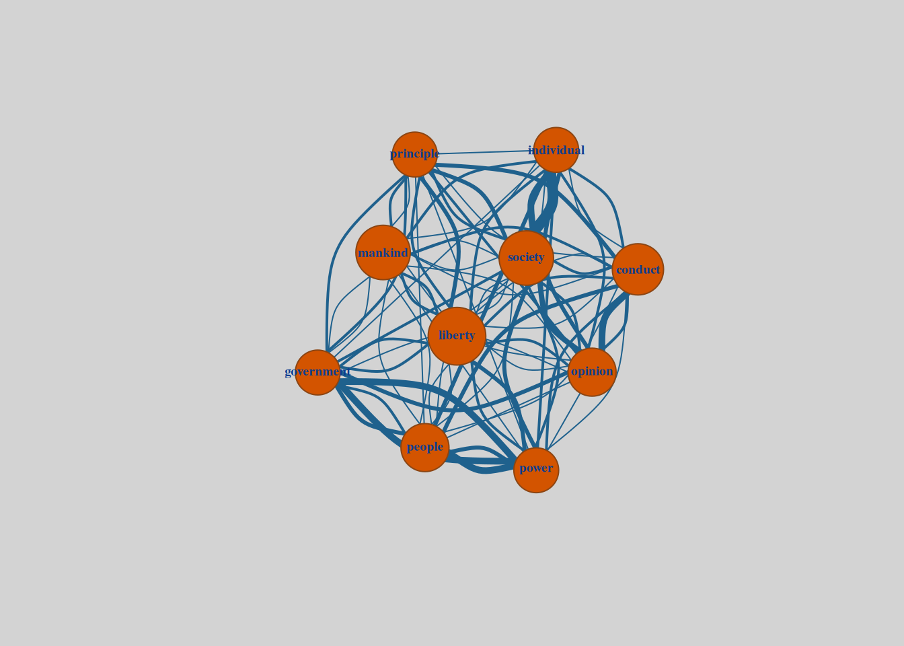
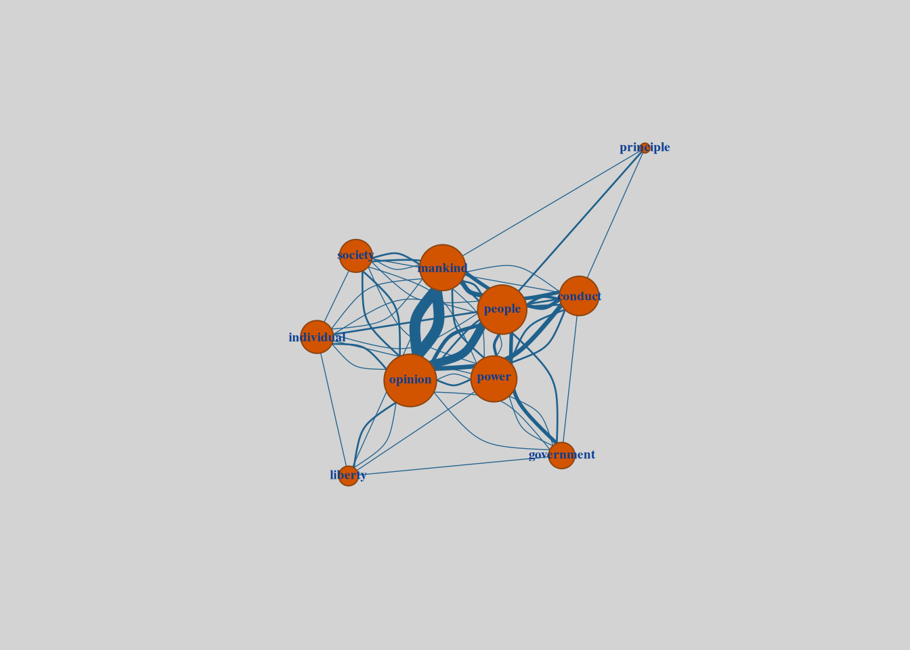
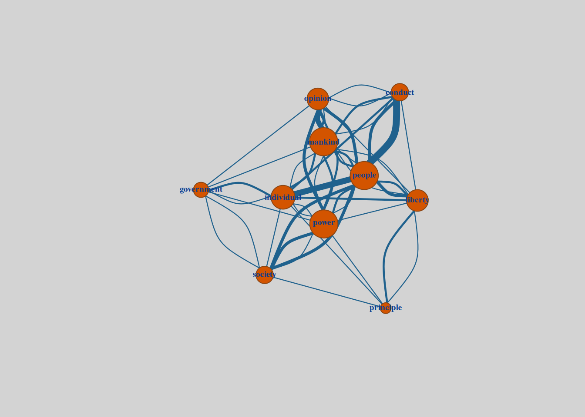
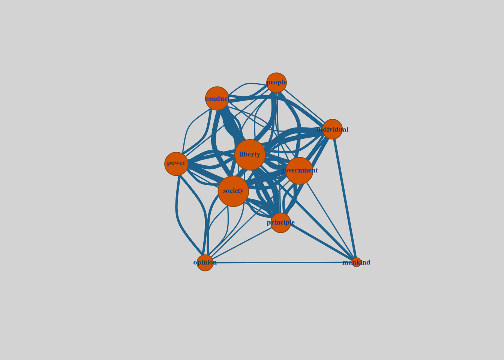

| Chapter | Chapter Title |
|---|---|
| 1 | Introductory |
| 2 | Of The Liberty Of Thought And Discussion |
| 3 | Of Individuality, As One Of The Elements Of Well-being |
| 4 | Of The Limits To The Authority Of Society Over The Individual |
| 5 | Applications |
The Shape of Ideas
Thematic analysis
Textual visualisation
Part 2 - Focused Frequencies
In the previous post, we explored how examining word frequencies can help infer meaning from a text. We also demonstrated how analyzing word co-occurrence provides additional layers of information, allowing us to discern relationships between terms and their significance in shaping the broader themes of the document.
In this post, we’ll expand on these approaches by focusing on more discrete chunks of text, such as individual chapters. This segmentation enables us to isolate the specific themes and concepts associated with particular sections, providing a clearer view of the detailed arguments that underpin the broader narrative. By examining these localized patterns, we can also better understand how overarching themes are constructed from more specific ideas.
Finally, we’ll introduce a method for identifying the relative importance of words within the context of the entire document: TF-IDF (Term Frequency-Inverse Document Frequency). This technique allows us to highlight the words that are particularly significant in a given section, shedding light on how distinct arguments and emphases contribute to the text as a whole. Using these methods, we’ll uncover new ways of exploring the structure and meaning of the work.
Chapter analysis - Word frequencies
With the text loaded, I’ve manually pulled out the chapter names as well as the beginning and end lines for each of the chapters. This allows us to associate each line in the text - and ultimately each word from the text - with the relevant chapter.
As in the preceding work, we can pull out the words that are most frequent. In this instance, we’ll take the top 10 most frequent words from each chapter.
| doc_id | word | frequency |
|---|---|---|
| 1 | society | 27 |
| 1 | power | 26 |
| 1 | government | 21 |
| 1 | liberty | 20 |
| 1 | individual | 19 |
| 1 | people | 18 |
| 1 | conduct | 16 |
| 1 | opinion | 16 |
| 1 | principle | 13 |
| 1 | mankind | 12 |
| doc_id | word | frequency |
|---|---|---|
| 2 | opinion | 98 |
| 2 | truth | 85 |
| 2 | opinions | 67 |
| 2 | mankind | 33 |
| 2 | true | 31 |
| 2 | mind | 28 |
| 2 | human | 27 |
| 2 | persons | 27 |
| 2 | people | 26 |
| 2 | doctrines | 26 |
| doc_id | word | frequency |
|---|---|---|
| 3 | human | 46 |
| 3 | people | 28 |
| 3 | character | 24 |
| 3 | nature | 22 |
| 3 | life | 21 |
| 3 | individuality | 19 |
| 3 | strong | 18 |
| 3 | persons | 17 |
| 3 | opinions | 15 |
| 3 | custom | 15 |
| doc_id | word | frequency |
|---|---|---|
| 4 | society | 37 |
| 4 | conduct | 30 |
| 4 | person | 28 |
| 4 | public | 26 |
| 4 | social | 22 |
| 4 | moral | 19 |
| 4 | persons | 19 |
| 4 | individual | 17 |
| 4 | opinion | 17 |
| 4 | wrong | 15 |
| doc_id | word | frequency |
|---|---|---|
| 5 | government | 35 |
| 5 | liberty | 34 |
| 5 | education | 25 |
| 5 | free | 24 |
| 5 | public | 23 |
| 5 | persons | 21 |
| 5 | society | 20 |
| 5 | person | 18 |
| 5 | freedom | 18 |
| 5 | question | 16 |
While we could use these in a preliminary approach to extracting meaning from each chapter, we’ll leave that until the next chapter where we focus on word-occurrences instead.
Chapter analysis - Word co-occurrences and network graphs
As we were able to reveal through previou analysis John Stuart Mill’s On Liberty explores the balance between individual freedom and societal authority. Analyzing word co-occurrence frequencies within each chapter, paired with network graphs, gives us a quantitative and visual means of understanding how Mill develops his arguments across the text. Each chapter’s thematic focus is illuminated by the most frequent word pairings, revealing both the ideas themselves and their progression throughout the essay.
| Word 1 | Word 2 | Frequency |
|---|---|---|
| society | individual | 8 |
| conduct | opinion | 5 |
| government | power | 5 |
| individual | society | 5 |
| people | power | 5 |
| power | government | 5 |
| opinion | society | 4 |
| government | opinion | 3 |
| government | people | 3 |
| individual | opinion | 3 |

| Word 1 | Word 2 | Frequency |
|---|---|---|
| mankind | opinion | 12 |
| opinion | mankind | 12 |
| people | opinion | 9 |
| mankind | people | 5 |
| opinion | conduct | 5 |
| conduct | mankind | 4 |
| government | people | 4 |
| opinion | people | 4 |
| people | conduct | 4 |
| conduct | people | 3 |

| Word 1 | Word 2 | Frequency |
|---|---|---|
| people | conduct | 7 |
| individual | people | 6 |
| opinion | mankind | 5 |
| conduct | people | 3 |
| liberty | people | 3 |
| people | opinion | 3 |
| people | society | 3 |
| power | opinion | 3 |
| power | society | 3 |
| society | people | 3 |

| Word 1 | Word 2 | Frequency |
|---|---|---|
| society | conduct | 8 |
| conduct | society | 6 |
| individual | society | 6 |
| conduct | individual | 5 |
| opinion | conduct | 5 |
| conduct | opinion | 4 |
| opinion | people | 4 |
| society | individual | 4 |
| conduct | people | 3 |
| liberty | society | 3 |
| Word 1 | Word 2 | Frequency |
|---|---|---|
| individual | liberty | 5 |
| power | government | 5 |
| principle | liberty | 5 |
| conduct | principle | 4 |
| liberty | government | 4 |
| liberty | people | 4 |
| society | conduct | 4 |
| conduct | individual | 3 |
| conduct | society | 3 |
| government | conduct | 3 |

Chapter 1: Introductory
In the opening chapter, Mill establishes the central tension between society and the individual, evident in the frequent pairing of these terms. The co-occurrence matrix emphasizes:
- “Society - Individual”: Reflecting the core question of where societal authority ends and personal liberty begins. Mill underscores the need to protect individuality from societal overreach.
- “Government - Power”: Highlighting Mill’s concern with the historical expansion of governmental power and its potential to suppress freedoms.
- “People - Power” (5): Exploring the risks of majority rule in democracies, where “the people” may wield power as oppressively as monarchs.
Chapter 2: Of The Liberty Of Thought And Discussion
This chapter is concerned with the value of free expression and debate. Word co-occurrences analyis highlights the importance of: - “Mankind - Opinion” (12): Highlighting Mill’s argument that the progress of humanity depends on the collision of diverse opinions, which challenge norms and uncover truths. - “People - Opinion” (9): Reflecting the relationship between collective societal beliefs and individual dissent. Mill defends the necessity of tolerating unpopular opinions. - “Mankind - People” (5): Emphasizing the collective benefits of individual intellectual freedom.
Chapter 3: Of Individuality, As One Of The Elements Of Well-being
Here, Mill argues for the importance of individuality in resisting societal conformity:
- “People - Conduct” (7): Highlighting Mill’s critique of the “tyranny of custom,” where societal expectations suppress individual decision-making.
- “Individual - People” (6): Showing the tension between personal freedoms and societal norms, with individuality framed as essential for societal progress.
- “Opinion - Mankind” (5): Connecting intellectual diversity with the advancement of humanity.
Chapter 5: Applications
The final chapter applies Mill’s principles to practical governance, emphasizing the tension between liberty and state power:
- “Individual - Liberty” (5): Centralizing Mill’s belief that individual freedom is essential for personal and societal progress.
- “Power - Government” (5): Highlighting Mill’s critique of bureaucratic overreach and the need to limit governmental authority.
- “Principle - Liberty” (5): Reflecting Mill’s philosophical groundwork for determining when societal intervention is justified.
- “Conduct - Society” (3): Reinforcing the nuanced balance between personal autonomy and collective welfare.
Progression Through the Text
When applied across each of the chapters, word co-occurrence and network analyses reveal a progression of themes throughout the text:
- Introductory (Chapter 1): Focused on establishing the tension between societal authority and individual liberty.
- Of The Liberty Of Thought And Discussion (Chapter 2): Emphasizes intellectual freedom as a prerequisite for societal progress.
- Of Individuality, As One Of The Elements Of Well-being (Chapter 3): Advocates for personal autonomy as a counterbalance to societal conformity.
- Of The Limits To The Authority Of Society Over The Individual (Chapter 4): Explores when societal intervention in individual conduct is justified.
- Applications (Chapter 5): Applies these principles to practical governance, advocating for decentralized power and personal responsibility.
Term Frequency-Inverse Document Frequency (TF-IDF)
So far, we’ve explored the text through word counts and co-occurrence frequencies, which have provided a broad understanding of the thematic dimensions and conceptual relationships in On Liberty. Examining these metrics at the chapter level has added a layer of resolution to our analysis, revealing not just overarching themes but also the specific concerns of each chapter and the progression of ideas through the text. While word counts and co-occurrences are powerful tools, they are limited in one important way: they treat all words and chapters as if they are equally significant within he text, without considering how much weight a particular word carries in relation to the rest of the work.
An alterntive approach to Term Frequency-Inverse Document Frequency (TF-IDF) comes into it. Unlike simple word counts, TF-IDF evaluates not just how often a word appears (its term frequency, TF) but also how unique or significant that word is within the context of the entire text (its inverse document frequency, IDF). By combining these two measures, TF-IDF highlights words that are both frequent in a given section (or “document”) but rare elsewhere in the text. This allows us to identify terms that are most characteristic of each chapter’s content.
What Does TF-IDF Measure?
Term Frequency (TF)
TF is a straightforward measure of how often a word appears in a specific document, relative to the total number of words in that document. For example, if the word “liberty” appears 50 times in Chapter 1, and Chapter 1 contains 1,000 words, the term frequency for “liberty” in that chapter is 0.05 (5%).
Inverse Document Frequency (IDF)
IDF measures how unique or rare a word is across the entire collection of documents (in this case, the chapters of On Liberty). Words that appear in many or all chapters (like “society” or “individual”) receive a low IDF score because they are not specific to any single chapter. Conversely, words that appear in only one or a few chapters receive a high IDF score, indicating that they are particularly characteristic of those sections.
TF-IDF Score:
The final TF-IDF score is calculated by multiplying a word’s TF by its IDF. This score prioritizes words that are frequent in a specific document but relatively rare across the rest of the collection, helping us identify terms that best represent the unique focus of each chapter.
Why Is TF-IDF Useful? TF-IDF adds nuance to our analysis by addressing the shortcomings of simple frequency-based methods. While co-occurrence counts reveal relationships between common terms, they don’t differentiate between words that are central to a specific chapter and words that are common across the entire text. TF-IDF fills this gap, pinpointing the key terms that make each chapter distinct.
For example:
In Chapter 1, “tyranny” might have a high TF-IDF score because it appears frequently there but less so in subsequent chapters. This would suggest that the chapter has a particular focus on critiquing tyranny, even if “liberty” is more frequent across the entire text. In Chapter 3, terms like “individuality” or “custom” might stand out, reflecting its emphasis on personal autonomy and societal norms. By applying TF-IDF, we can uncover not just recurring themes but the specific terms and ideas that define each chapter, providing a sharper lens for understanding the structure and argument of On Liberty. This technique is particularly valuable for examining how Mill shifts his focus from general principles to more applied discussions, and for highlighting the unique vocabulary that drives his argument in each section.
TF-IDF, therefore, is not just another measure of word frequency; it is a tool for weighting words by their contextual importance.
Chapter analysis - TF-IDF
| Chapter | Word | n | tf | idf | TF-IDF Score |
|---|---|---|---|---|---|
| 1 | external | 5 | 0.0026 | 1.6094 | 0.0042 |
| 1 | mandates | 3 | 0.0016 | 1.6094 | 0.0025 |
| 1 | ruled | 3 | 0.0016 | 1.6094 | 0.0025 |
| 1 | rulers | 8 | 0.0042 | 0.5108 | 0.0022 |
| 1 | independence | 4 | 0.0021 | 0.9163 | 0.0019 |
| 1 | limitation | 4 | 0.0021 | 0.9163 | 0.0019 |
| 1 | rightfully | 4 | 0.0021 | 0.9163 | 0.0019 |
| 1 | answerable | 2 | 0.0011 | 1.6094 | 0.0017 |
| 1 | ascendancy | 2 | 0.0011 | 1.6094 | 0.0017 |
| 1 | dislikings | 2 | 0.0011 | 1.6094 | 0.0017 |
| 1 | disturbed | 2 | 0.0011 | 1.6094 | 0.0017 |
| 1 | elective | 2 | 0.0011 | 1.6094 | 0.0017 |
| 1 | greece | 2 | 0.0011 | 1.6094 | 0.0017 |
| 1 | infringe | 2 | 0.0011 | 1.6094 | 0.0017 |
| 1 | liking | 2 | 0.0011 | 1.6094 | 0.0017 |
| 1 | likings | 2 | 0.0011 | 1.6094 | 0.0017 |
| 1 | occupied | 2 | 0.0011 | 1.6094 | 0.0017 |
| 1 | perceived | 2 | 0.0011 | 1.6094 | 0.0017 |
| 1 | portions | 2 | 0.0011 | 1.6094 | 0.0017 |
| 1 | ruling | 2 | 0.0011 | 1.6094 | 0.0017 |
| 1 | servility | 2 | 0.0011 | 1.6094 | 0.0017 |
| 1 | tyrannising | 2 | 0.0011 | 1.6094 | 0.0017 |
| 1 | vultures | 2 | 0.0011 | 1.6094 | 0.0017 |
| 1 | wait | 2 | 0.0011 | 1.6094 | 0.0017 |
| Chapter | Word | n | tf | idf | TF-IDF Score |
|---|---|---|---|---|---|
| 2 | doctrines | 26 | 0.0050 | 0.9163 | 0.0045 |
| 2 | false | 13 | 0.0025 | 1.6094 | 0.0040 |
| 2 | truth | 85 | 0.0162 | 0.2231 | 0.0036 |
| 2 | infallibility | 11 | 0.0021 | 1.6094 | 0.0034 |
| 2 | error | 16 | 0.0031 | 0.9163 | 0.0028 |
| 2 | ethics | 8 | 0.0015 | 1.6094 | 0.0025 |
| 2 | persecution | 14 | 0.0027 | 0.9163 | 0.0024 |
| 2 | christian | 25 | 0.0048 | 0.5108 | 0.0024 |
| 2 | assumption | 7 | 0.0013 | 1.6094 | 0.0021 |
| 2 | hearing | 7 | 0.0013 | 1.6094 | 0.0021 |
| 2 | rejected | 7 | 0.0013 | 1.6094 | 0.0021 |
| Chapter | Word | n | tf | idf | TF-IDF Score |
|---|---|---|---|---|---|
| 3 | originality | 10 | 0.0040 | 1.6094 | 0.0064 |
| 3 | genius | 8 | 0.0032 | 1.6094 | 0.0051 |
| 3 | impulses | 13 | 0.0052 | 0.9163 | 0.0047 |
| 3 | customary | 5 | 0.0020 | 1.6094 | 0.0032 |
| 3 | weak | 5 | 0.0020 | 1.6094 | 0.0032 |
| 3 | customs | 8 | 0.0032 | 0.9163 | 0.0029 |
| 3 | conformity | 4 | 0.0016 | 1.6094 | 0.0026 |
| 3 | eccentricity | 4 | 0.0016 | 1.6094 | 0.0026 |
| 3 | mediocrity | 4 | 0.0016 | 1.6094 | 0.0026 |
| 3 | noble | 4 | 0.0016 | 1.6094 | 0.0026 |
| Chapter | Word | n | tf | idf | TF-IDF Score |
|---|---|---|---|---|---|
| 4 | punished | 5 | 0.0019 | 1.6094 | 0.0031 |
| 4 | amusements | 4 | 0.0015 | 1.6094 | 0.0025 |
| 4 | distaste | 4 | 0.0015 | 1.6094 | 0.0025 |
| 4 | gross | 4 | 0.0015 | 1.6094 | 0.0025 |
| 4 | alliance | 3 | 0.0011 | 1.6094 | 0.0018 |
| 4 | barbarism | 3 | 0.0011 | 1.6094 | 0.0018 |
| 4 | breaks | 3 | 0.0011 | 1.6094 | 0.0018 |
| 4 | displeases | 3 | 0.0011 | 1.6094 | 0.0018 |
| 4 | distinction | 3 | 0.0011 | 1.6094 | 0.0018 |
| 4 | fermented | 3 | 0.0011 | 1.6094 | 0.0018 |
| 4 | invades | 3 | 0.0011 | 1.6094 | 0.0018 |
| 4 | mussulmans | 3 | 0.0011 | 1.6094 | 0.0018 |
| 4 | pork | 3 | 0.0011 | 1.6094 | 0.0018 |
| 4 | sunday | 3 | 0.0011 | 1.6094 | 0.0018 |
| 4 | vicious | 3 | 0.0011 | 1.6094 | 0.0018 |
| 4 | workmen | 3 | 0.0011 | 1.6094 | 0.0018 |
| Chapter | Word | n | tf | idf | TF-IDF Score |
|---|---|---|---|---|---|
| 5 | bureaucracy | 11 | 0.0035 | 1.6094 | 0.0056 |
| 5 | crime | 9 | 0.0028 | 1.6094 | 0.0046 |
| 5 | central | 8 | 0.0025 | 1.6094 | 0.0040 |
| 5 | local | 8 | 0.0025 | 1.6094 | 0.0040 |
| 5 | child | 7 | 0.0022 | 1.6094 | 0.0035 |
| 5 | engagements | 6 | 0.0019 | 1.6094 | 0.0030 |
| 5 | examination | 6 | 0.0019 | 1.6094 | 0.0030 |
| 5 | localities | 6 | 0.0019 | 1.6094 | 0.0030 |
| 5 | trade | 6 | 0.0019 | 1.6094 | 0.0030 |
| 5 | parties | 10 | 0.0031 | 0.9163 | 0.0029 |
By identifying words that are of particular importance in each of the chapters, TF-IDF analysis offers a lens through which each chapter’s unique thematic focus becomes more apparent, sharpening our understanding of Mill’s arguments and their progression. By highlighting the most distinct terms, TF-IDF complements our earlier co-occurrence analyses, allowing us to isolate chapter-specific priorities and showing how Mill develops his broader principles of liberty and governance across the text.
Chapter 1: Introductory
TF-IDF reveals the chapter’s emphasis on external authority and limitations on governance. The focus on terms like “external,” “mandates,” “rulers,” and “limitation” underscores Mill’s effort to historically and philosophically ground his argument for limiting societal and governmental interference. At the same time, terms like “independence” and “rightfully” highlight the chapter’s normative goals, advocating for autonomy and the ethical justification of interventions. Together, these terms demonstrate how Mill frames his argument for liberty, balancing historical context with philosophical rigor.
Chapter 2: Of The Liberty Of Thought And Discussion
The TF-IDF terms for Chapter 2 emphasize Mill’s core argument about the value of free speech and open debate in the search for truth. Terms like “doctrines,” “false,” and “truth” reflect the chapter’s focus on the intellectual marketplace, where ideas compete and evolve. “Infallibility” and “error” underscore Mill’s critique of dogmatism and his belief in the fallibility of human judgment, reinforcing the need for intellectual humility and openness. Together, these terms highlight Mill’s defense of dissent and his insistence that progress depends on the continual testing and refinement of ideas through dialogue and disagreement.
Chapter 3: Of Individuality, As One Of The Elements Of Well-being
The TF-IDF terms for Chapter 3 align with Mill’s celebration of individuality and critique of societal conformity. Terms like “originality,” “genius,” and “impulses” emphasize the vitality and creativity that come from embracing individuality, while “customs,” “conformity,” and “mediocrity” highlight the dangers of suppressing it. The chapter calls for a balance, where customs are respected but not blindly followed, and eccentricity is valued as a marker of a free and progressive society. This analysis underscores Mill’s belief that societal advancement depends on protecting spaces for individuality and creativity to thrive.
Chapter 5: Applications
The TF-IDF analysis for Chapter 5 highlights its focus on governance, education, and societal obligations. Terms like “bureaucracy,” “central,” and “localities” reflect Mill’s emphasis on balancing centralized authority with local autonomy to foster individual and community development. Meanwhile, terms like “child,” “examination,” and “engagements” underscore the chapter’s concern with societal responsibilities in education and moral obligations. The interplay between these themes demonstrates Mill’s nuanced approach to ensuring liberty while maintaining social order and fostering collective progress.
Conclusions
As we demonstrated in the previous post, much can be achieved in text interpretation simply by counting words. However, a more nuanced understanding emerges when we consider the specific context—focusing on individual chapters rather than the text as a whole—and give attention to words that are particularly relevant within that context. In this analysis, we sketched the outlines of the arguments in each chapter by analyzing word frequencies, exploring word co-occurrences, and interpreting these patterns through the lens of the words most critical to that part of the text.
Previously, we were able to establish the general themes of the text. Now, we can break this down into a more nuanced and detailed picture. Word co-occurrences help us identify relevant terms by their contextual relationships, while TF-IDF highlights the unique contributions of each chapter to the overall argument. This dual approach provides deeper insights into the text’s structure, enhances our appreciation of its thematic progression, and offers a simple yet effective way to visualize its intricacies.